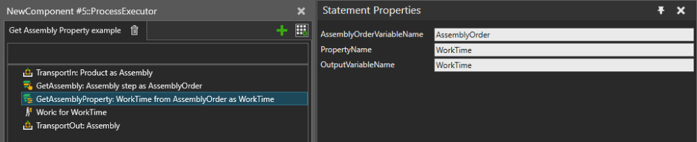

Finds a property from selected Assembly Steps of an Assembly Type and copies its value to a Process variable.
An Assembly Order is used to define one or more Assembly Steps from an Assembly Product Type that should contain a user-defined property. The selected Assembly Steps are searched in the assembly order, and the first property with the given name is selected.

| Name | Description |
AssemblyOrderVariableName |
Name of the Process variable where to get an Assembly Order. The Assembly Order defines the Assembly Steps to search. |
PropertyName |
Name of the Assembly Step property to get the value of. |
OutputVariableName |
Name of the Process variable to use for storing the result. If an existing variable is used, the data type needs to match the type of the Assembly Step property. A new Process variable of the correct type is created automatically if one doesn’t exist. |